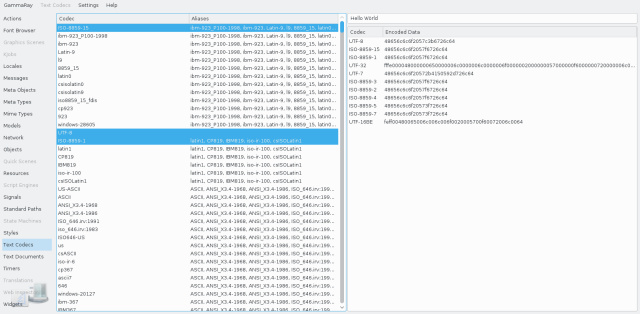

The text codec browser allows you to inspect QTextCodec instances available on the target system, and to see how a specific code converts a given QString.
This information is usually independent of the target application, but rather depend on the system.

The list on the left side contains all codecs known by QTextCodec, as well as their aliases. You can select one or more of these codecs for looking at their encoding results on the test string at the upper-right side. Encoding results are shown for all selected codecs on the right side.